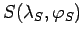
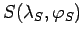
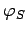

Inhalt Index DeskTop Bronstein

 Geometrie Sphärische Trigonometrie Berechnung sphärischer Dreiecke Schnittpunkte sphärischer Kurven
Geometrie Sphärische Trigonometrie Berechnung sphärischer Dreiecke Schnittpunkte sphärischer Kurven


Die betrachteten Loxodromen sollen die Äquatorschnittpunkte und sowie die Kurswinkel  und haben. Einsetzen des Schnittpunktes  in beide Loxodromengleichungen führt auf das Gleichungssystem
und haben. Einsetzen des Schnittpunktes  in beide Loxodromengleichungen führt auf das Gleichungssystem
| (3.256b) |
Elimination von und Auflösung nach  ergibt eine Gleichung mit unendlich vielen Lösungen:
| (3.257) |
Die dazugehörigen geographischen Längen ergeben sich durch Einsetzen von  in (3.256a):
in (3.256a):
| (3.258) |
Hinweis: Unter Umständen ist gemäß (3.231) eine Rückversetzung der Winkel erforderlich.